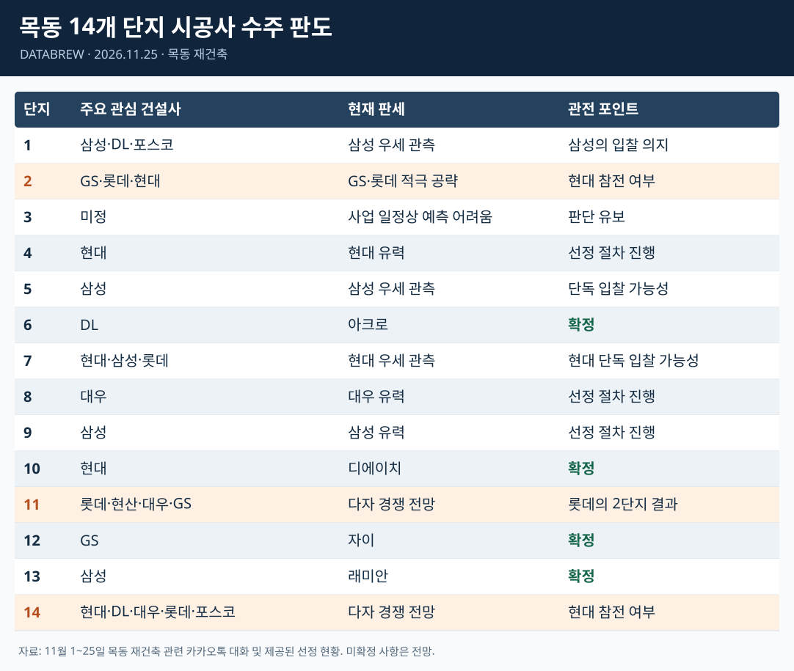
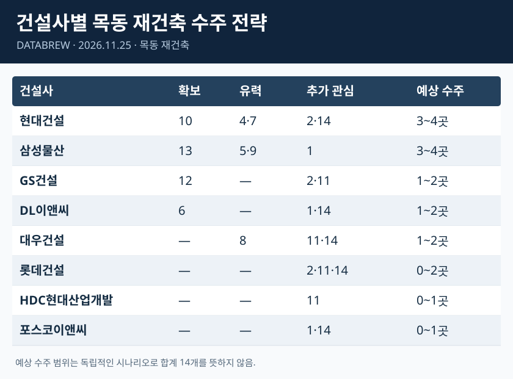

[재건축 크래프트] 현대냐 삼성이냐…30조원 목동 재건축의 패권 경쟁
프로딴짓러30조원 규모의 목동 재건축. 시공권을 둘러싼 건설사들의 거대한 체스 게임이 갈수록 치열해지고 있습니다. 최근 목동 재건축 관련 카카오톡 대화방에서는 자기 단지뿐 아니라 다른 단지의 시공사 선정에도 관심이 쏠립니다. 앞선 단지의 결과가 다음 단지의 경쟁 구도를 바꿀 수 있기 때문입니다.
11월 25일 현재 6단지는 DL이앤씨, 10단지는 현대건설, 12단지는 GS건설, 13단지는 삼성물산이 시공권을 확보했습니다. 시공사 선정 절차가 진행 중인 4단지는 현대건설, 8단지는 대우건설, 9단지는 삼성물산이 유력한 상황입니다. 예상대로라면 14개 단지 중 절반의 시공사 윤곽이 드러나는 셈입니다.

현대와 삼성, 목동의 패권 경쟁
25일 시공사 입찰공고가 나온 7단지는 목동의 상징성이 큰 사업장입니다. 삼성물산이 5·9단지에, 롯데건설이 2·11단지에 역량을 집중하면서 현대건설의 단독 입찰 가능성도 거론됩니다. 현대가 4단지와 7단지를 확보한다면 이미 선정된 10단지까지 총 3곳을 확보하게 됩니다.
변수는 삼성물산입니다. 이미 13단지를 확보한 삼성이 9단지에 이어 5단지와 1단지까지 가져간다면 4곳에 래미안 브랜드를 내걸게 됩니다. 이 경우 현대건설도 2단지나 14단지에서 추가 수주를 노릴 유인이 커질 수 있습니다. 개별 사업장의 수익성과 목동 전체의 브랜드 입지를 함께 고려하는 셈법입니다.
2·11·14단지, 수주전의 승부처
2단지에서는 GS건설과 롯데건설의 홍보 활동이 대화방에서 자주 언급됩니다. 12단지를 확보한 GS는 추가 수주를, 롯데는 목동 첫 시공권을 노리는 구도입니다. 현대까지 가세하면 대형 건설사 3파전이 될 수 있습니다. 반대로 현대가 7단지까지 확보하고 2단지에서 물러선다면 GS와 롯데의 양자 대결 가능성이 커집니다.
2단지의 결과는 11단지에도 영향을 줄 수 있습니다. 롯데가 2단지를 확보하면 11단지의 경쟁 강도가 달라질 수 있고, 실패하면 11단지에 역량을 집중할 유인이 생깁니다. HDC현대산업개발과 대우건설의 선택도 변수입니다.
목동 최대 규모인 14단지에서는 현대건설의 참전 여부가 관심사입니다. 현대가 다른 사업장을 충분히 확보한다면 DL이앤씨와 대우건설이 경쟁의 중심에 설 가능성도 있습니다. 롯데와 포스코이앤씨의 움직임 역시 주목할 만합니다. 3단지는 상대적으로 늦은 사업 일정 때문에 앞선 단지들의 수주 결과에 따라 판세가 달라질 수 있습니다.

가장 좋은 건설사와 가장 좋은 수주 전략은 다릅니다
목동 14개 단지의 시공사 선정은 독립된 사건이 아닙니다. 한 단지에서 승리하면 다른 단지에서 무리할 필요가 줄어들고, 반대로 수주에 실패하면 남은 단지에 더 많은 자원을 투입할 유인이 생깁니다. 조합원이 선호하는 브랜드가 반드시 입찰하는 것도 아닙니다. 건설사는 사업성, 공사비, 경쟁 비용, 인력과 자금 여력을 함께 고려해야 합니다.
현대와 삼성에는 패권 경쟁이고, GS·DL·대우에는 입지 확대 경쟁이며, 롯데·현산·포스코에는 목동 진입 경쟁입니다. 같은 시공권을 놓고 싸우지만 건설사마다 승리의 조건이 다릅니다. 마치 체스판에서 상대의 다음 수를 읽으며 자신의 말을 움직이는 것과 같습니다.
그래서 이걸 게임으로 만들어봤습니다
‘재건축 크래프트(RECONSTRUCTION CRAFT)’는 목동 14개 단지를 배경으로 플레이어가 건설사의 수주 책임자가 되는 전략 시뮬레이션 게임입니다. 어느 단지를 공략하고 주민들의 호감도를 어떻게 높일지, 설명회와 견본주택에 얼마나 투자할지 결정합니다. 경쟁사의 움직임을 살피고 한정된 자원을 배분하면서 시공사 선정 투표에 대비해야 합니다.
실제 단지의 특성과 건설사들의 경쟁 구도를 출발점으로 삼았지만 게임의 결과가 현실의 시공사 선정 결과를 예측하는 것은 아닙니다. 건설사들이 왜 특정 사업장을 선택하고 다른 사업장에서 물러나는지, 경쟁사의 결정이 자신의 전략에 어떤 영향을 미치는지 직접 경험해보는 것이 목적입니다.
데이터와 현실을 기반으로 게임을 만들고, 다시 게임을 통해 현실을 이해하는 것. 제가 databrew에서 시도하고 있는 또 하나의 콘텐츠 실험입니다. 여러분이 현대건설의 수주 책임자라면 2단지와 14단지 중 어디에 전력을 쏟으시겠습니까? 롯데건설이라면 목동의 첫 깃발을 어디에 꽂으시겠습니까?